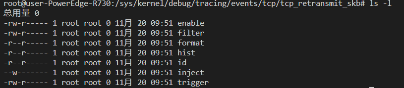

内核相关资料整理
前面对eBPF进行了简单了解，但是eBPF使用kprobes和tracepoint时都需要引用到内核中的函数（如syscall）或者tracepoint。如果直接看内核源码未免难度过于高，因此作为一个eBPF或者内核新手，先对相关资料进行整理。【持续更新】
1. 系统调用：
注意，kprobe不只是能绑定在syscall上，几乎有所内核中的函数都能绑定~
Linux的系统调用数量较多，已经有人整理了不同架构下的系统调用表（顺序靠前推荐度更高）：
- https://x64.syscall.sh/: 64位操作系统下的系统调用，其他架构下的系统调用也提供了外链。
- https://filippo.io/linux-syscall-table/: 只有64位系统的系统调用, 但是对于参数和寄存器给出的信息更为详细。
2. 内核Tracepoints：
相关文档:
目前内核tracepoint似乎还没有人进行总结汇总，但是可以通过指令来获取所有tp（需要root权限）：
1 | |
上面的指令筛选指定目录下所有的目录，可见/sys/kernel/debug/tracing/events/下还有文件:
1 | |
输出:
./header_event
./header_page
./enable
如果cat enable, 应该会得到输出X, 查阅tracepoint相关文档：Linux event tracing发现，这是控制tracepoint是否开启的标识。
再以tcp重传事件的tracepoint——tcp_retransmit_skb为例，如果要找到它只需:
1 | |

每个tracepoint下有6个文件，有的文件是控制是否启用，或者进行事件过滤（具体可参考文档）。
3. 内核源码文档：
内核源码可以直接从Github上拉代码下来看，但是只是作为文档查询时，有个在线的文档还是比较省事：
源码文档链接：https://elixir.bootlin.com/linux/v4.13/source/include
4. 内核数据结构：vmlinux.h
vmlinux.h是使用工具生成的代码文件，包含了系统的Linux内核源代码中使用的所有类型定义（比较大，大概有几MB）
如果想得到这个vmlinux.h文件只需要执行以下指令:
1 | |
内核tracing的相关文件路径小结：
bpf_trace_printk打印的内容会输出到管道/sys/kernel/debug/tracing/trace_pipe中。/sys/kernel/debug/tracing/events包含了所有的tracepoint。(注意：/sys/kernel/tracing/events下也有tracepoint的内容，具体有何区别目前无法找到资料，但是仅推荐使用/sys/kernel/debug/tracing/events下的内容)/sys/fs/bpf/下包含了所有的ebpf pinned maps/sys/kernel/debug/tracing/error_log：这是内核相关错误日志的位置，使用eBPF时如果命令行的错误信息不够详细可以在这里看更详细的内容。